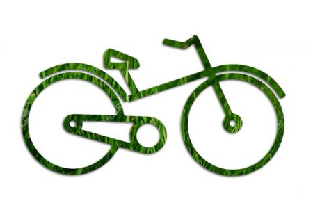
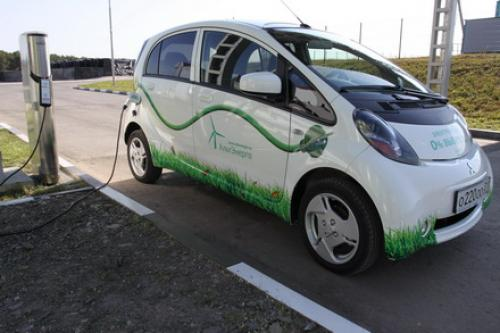
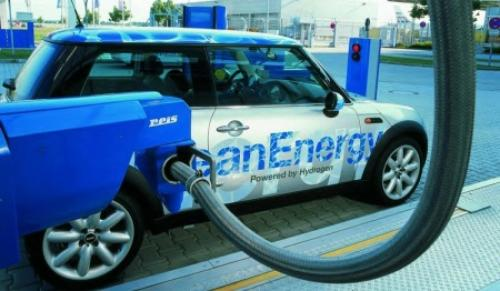
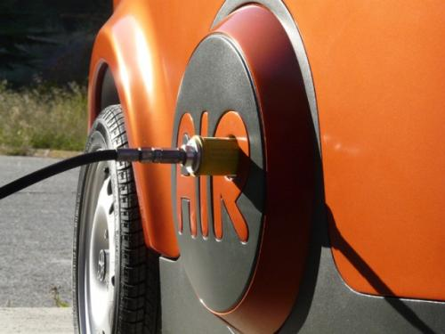
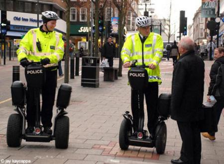

Значение транспорта для человечества трудно переоценить. С незапамятных времен он играл важную роль, постоянно развиваясь и совершенствуясь. Произошедшая в XX веке научно-техническая революция, рост населения, урбанизация и множество других факторов вывели его развитие на совершенно новый уровень.
Велосипед
Однако, одновременно с этим появилась и проблема: огромное количество транспортных средств стало причиной ухудшения экологической обстановки в масштабах всей планеты. Именно поэтому все большее внимание обращается сегодня на развитие экологических видов транспорта.
Любой транспорт, получение энергии для которого не связанно с процессами горения углеводородов, можно назвать экологически чистым. Исключение составляют атомные реакции, которые на сухопутном транспорте не используются. Биодизель, двигатель внутреннего сгорания на спирту тоже сжигают углерод, поэтому их нельзя относить к экологически чистым видам транспорта. Наиболее правильно классифицировать экотранспорт по видам двигателей.
Электрический привод
Водородные двигатели
Электрический привод
Воздухомобиль
Сегвей